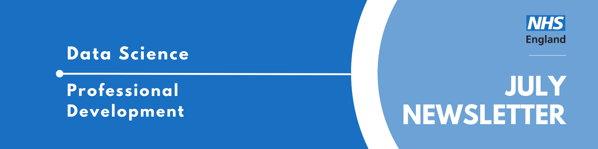

Data Science Community for Health and Care Newsletter July 2025

Welcome to the latest newsletter from the Data Science Community for Health and Care, brought to you by the NHS England Data Science Professional Development Functional Team.
The newsletter team are always happy to receive constructive feedback, and we invite you to send us any contributions you may have.
If you cannot access something of interest to you, please reach out.
Thanks for reading! – newsletter team
Interview with a Data Scientist - The Data Science Intern Making an Impact
Welcome to another insightful installment of our “Interview with a Data Scientist” series. Here, we delve into the diverse career paths and impactful work of the talented individuals who make up the NHS England Data Science team. Our goal is to shine a light on the fantastic people driving the NHS Data Science Profession forward and to offer valuable perspectives for anyone considering a career in healthcare data science.
This week our interviewee is Mobolu Olowoyeye, a Data Scientist intern that joined the Data Science Team for eight weeks. Mobolu has a keen interest in AI ethics and has been involved in various projects that explore the intersection of technology and public good.
Read more…
How did you end up in data science at the NHS? What did you do before, and what really sparked your interest in this field?
Using technology to drive positive change? There’s no place I’d rather be!
Making a real-world impact with technology has always been a key motivation for me, so when I saw how data science could make a difference in healthcare at the NHS, I was all in!
I’ve just finished my first year of university and decided to spend my summer exploring possible career paths. I’m currently studying Artificial Intelligence at King’s College London. Yes, AI is officially a degree now; Crazy, right?
I’ve always loved mathematics and computer science, but I specifically chose to study AI because of its multidisciplinary nature and my passion for AI Ethics. I became intrigued by AI ethics and understanding technology’s impact on society after watching the documentary ‘Coded Bias,’ which explored algorithmic bias in facial recognition technology. As an aspiring black woman in tech, seeing the impact of bias on people who look like me opened my eyes to a worrying reality. This inspired me to create an academic research poster on the topic, which I had the wonderful opportunity to present at the House of Lords!
My journey into data science began the summer after my GCSEs, with a four-week internship at QBE Insurance. I discovered I really enjoyed working with big data, and the following year, I had the chance to work at Circana, a big data and analytics company. I also gained a behind-the-scenes look at how tech companies use data to make decisions during my time as a data science mentee at Deliveroo.
I also dipped into quantitative finance, gaining software engineering experience at G-Research and spending time at PDT Partners, a quantitative investment firm. While I found these experiences incredibly interesting, I realised I’m more drawn to data science with a social or public impact—not just numbers, but outcomes that improve people’s lives.
That’s where the NHS came in. I’ve always been passionate about using technology as a force for good, and data science in healthcare feels like exactly that. Whether it’s tackling health inequalities, improving patient outcomes, or making systems run more efficiently, its impact is real and visible.
Alongside this internship, I’ve been an undergraduate research fellow at King’s, focusing on the ethical implications of AI in insurance law. I was also selected as one of 200 students for a BAME mentorship programme, where I was mentored by a PhD researcher working on ethics in language models.
So, between the technical side, the public good aspect, and my passion for ethical, responsible tech, data science in the NHS just made sense. Long-term, I’d love to work in AI policy or as a data ethicist, helping shape how technology is used fairly and safely across society. I’m also hoping to do a placement year in industry during my third year of university.
What are you currently working on? Are there any projects that you’re particularly excited about, or that you feel are making a real difference? What impact are you having?
I’ve been interning with the Data Science and Applied AI team for the past eight weeks. During this time, I’ve had the opportunity to learn, lead, and contribute in ways that have truly shaped my understanding of data science and AI in healthcare.
One of my most insightful experiences was speaking with front-line workers. I went to Epsom Hospital to talk with GPs about AI tools like Ambient Voice Technology and ran a small focus group to explore how AI impacts their daily work.
My main project has been the Synthetic Clinical Notes Project, where we create synthetic patient data to train an AI model for automating discharge summaries. When I joined, the dataset primarily used White British names and ethnicities. As someone from an ethnic minority with a culturally distinctive name, I recognised the risk of bias this could create. To address this, I’ve spent the last few weeks diversifying the naming data, researching names from a wide range of ethnic groups based on NHS staff survey statistics. By helping create a more representative dataset, I’ve contributed to making the project more ethically robust and ensuring it serves the public interest. I also helped update the style instructions for the clinicians who write these notes.
Alongside my project work, I’ve been completing the Edward Jenner Leadership Programme, spoke on AI ethics at a GOSH training session, developed my Python skills through the Federated Data Platform pipeline, and contributed to discussions around data hazard labels. These experiences have all deepened my commitment to building responsible and impactful technology.
July Analyst X Data Science Huddle
Recently, the Data Science Community for Health and Care organised a talk discussing the principles used in building the NHSRwaitinglist package, a package to apply calculations and principles from queuing theory to NHS waiting list analysis.
Missed the session? Check out the recording and PowerPoint slides here, where you will also find the recordings of previous huddles.
Analyst X DS Huddle: Dual Project Showcase
23rd of September 2025, 14:00 - 15:00, Online
The Data Science Community for Health and Care have organised the next AnalystX Data Science Huddle for September! The session will include two talks: Simulation Modelling of Non-Elective Patient Flow, and Probabilistic Linkage Pipeline Improving Linkage Quality and Explainability in Healthcare.
Abstract: Simulation Modelling of Non-Elective Patient Flow
Poor admitted non-elective patient flow is a major issue for many acute trusts. Discrete Event Simulation (DES) is a useful tool for modelling patient pathways. This project used DES to model patient flow for non-elective admissions. The model was used to investigate how reductions in inpatient length of stay, non-criteria to reside, additional escalation beds and fluctuations in demand impact waits for admission in ED. The model allows testing of ad hoc scenarios, via a user-friendly streamlit app, and has also been used to provide evidence-based targets for inpatient length of stay and informed discussions about relevant flow metrics. In this talk I’ll discuss the model, how it works and some of the insights from the project and happy to answer any questions or receive any suggestions you may have!
Abstract: Probabilistic Linkage Pipeline Improving Linkage Quality and Explainability in Healthcare
The current methods used for data linkage or indexing in the healthcare industry follow deterministic algorithms that are not transparent to the end users and with often sub-optimal outcomes. Our work focuses on building and implementing a probabilistic algorithm that improves quality as well as explainability of the linkage. In this project we have used Splink, a UK Ministry of Justice probabilistic linkage Python package, to build a pipeline that links any health data set to the Personal Demographics Service (PDS), a dataset containing information about all patients registered to a GP in England, which acts as our linkage “spine”.
We have added this event to our Data Science Community for Health and Care calendar, where you can find the calendar invite to access the event.
If you would like to be invited to future events of ours, sign up to our mailing list!
Events
Lots of exciting things coming up! See the full calendar here, and a small selection below.
AI and Defence for Maritime: Breakfast Briefing
Wednesday 17th September, 09:30 - 11:30, IET London: 2 Savoy Place, London,
The Alan Turing Institute’s Sustainability Mission is hosting a cross-cutting event with the aim to bring together a range of individuals across industry, government, and academia to discuss Artificial Intelligence (AI) in maritime. The focus of this event will be to break down silos, and foster communication across a diverse group of people (regulators, insurers, developers, users), and throughout the AI lifecycle. We will explore the current state of AI in relation to defence across the maritime sector.
If you would like to learn more about how AI can be used within the Maritime sector for defence, and how attackers can use AI against maritime technology, come along to hear from experts in the field and network with likeminded individuals over some breakfast!
This is a free workshop event and requires you to register your interest.
Big Data LDN
Wednesday 24th - Thursday 25th September, All Day, London
Big Data LDN is the UK’s leading free to attend data, analytics and AI conference & exhibition.
The two day event is a hub for the Data Community to learn and share best practice, build relationships and find the tools needed to develop an effective data-driven business.
See more future events on the calendar
Know of any events we should feature next month? Let us know by clicking the “Contribute” button, or here.
The Operational Research Society have a new Data Science section
The Operational Research (OR) Society have a new Data Science section called Data Science Connects. This is a commnuity of the OR Society and has tailored resources and training in the data science field.
Check out our collection of training resources in the Resources Section! Can you spot something missing? Contact us!